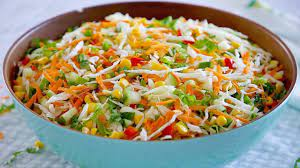
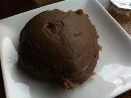

Just as rice is a staple in Many Asian and Latin American Countries,it is in Nigerian,too.Jollof rice,at its core,is rice cooked with tomato,onion,pepper,and spices.This ubiquitous dish is present on both special occasions and regular meals.

Not only is this dish popular in Nigeria, but in other African countries as well,such as Ghana.With its rich flavors,i'm not suorised why.other variations include vegetables or a type of meat,such as beef,fish,or chicken.
Egusi soup is a Nigerian delicacy that features ground melon or pumpkin seeds as its main ingredient.other ingredients include meat or seafood,fermented beans,onins and vegetables.
The combination of ingredients makes for a flavorful soup.Thanks to the pupkin deeds(egusi),this soup has a wonderful nuttiness to it.The rest of the ingredients add salty,savory and spicy flavors as well.The heart soup is most commonly eaten with pounded yam,which is a dough-based dish made of suprise-pounded yam.
Moi Moi is a Nigerian steamed pudding made from black-eyed peas,bouillon,dried crayfish,onions and grounded peppers.it siunds like such a crazy combinations,ut it works! Moi Moi has either a cylindrical or pyramid shape,depending on the mold used to make it.
The molds are then placed in a pot of boiling water,steaming the misture and turning it into pudding.The tasty delicacy can be enjoyed on its own or eaten with jollof rice or fried plantains.
Fufu is a large starchy dumpling made of equal parts green plantainn flour,cassava,and water.it's another Nigerian staple that's alson popular in many west African Countries. Traditional fuf is made by manually poundng the ingredients using a mortar and pestle.

For this recipe,however,you'll keep it simple by using a food processor.Nigerian customer dictate the fufu be eaten by hand.it's served family-style,where people can pull off a small chunk of fuf,roll it into a small chunk of fufu,roll it into a ball,make an indentation in the center with their thumb and dip it into a soup or stew.
Nigerian Tomato Stew has alovely red hue and delicious bold flavors.with rich tomatoes as its flavor base,this stew is truly enticing.Additional flavor agents include onions,bouillon,curry,thyme,garlic,and peppers.
What gives its distint flavor,though,is the gamey ram.Because it's very expensive,this protein is considered celebratory meat and is often only served during special occassions,such as the islamic holiday,Eib-el Kabir,Christmas day.
Ogbono soup has a slippery texture and a rich flavor. it's also sometimes referred to as "draw soup," because of its mucilaginous texture.Admittedly,the consistency takes a bit of getting used to,but once you d,you'll fall hard.it gets its distinct texture from ogbono a type of wild mango.interestingly,it's the seeds that are added,not the flesh.
Besides the ogbono seeds,the soup also features dried fish,stockfish,assorted meat,and spies.The different ingredients combine to create a medley of flavors and textures.ogbono soup is typically eaten with eba,pounded yam,or fufu.
Nigerian salad is a colorful appetizer that features a myriads of raw and cooked vegetables,beans,pasta,eggs,and a lot more.The vegetables typically include lettuce,cabbage,tomatoes,cucumber,and corn.From the colors to the flavors to the textures,this salad gets 10s across the board.

Since it's very hearty,it can be served as ameal on it's own.but it's also coommonly paired with jollof rice or fried chicken.
Amala is a Nigerian delicacy made of yam flour cooked in boiling water until it forms a dough.The dough is kneaded to become smooth and lumpfree the trademark of a perfect amala.While yam flour is white,it changed in color when dried,which is why amala is brown.

Amala is alot similar to fufu but a bit softer.just like its cousin,it's also typically eaten with soups such as ogbono and egusi
Chicken stew is a hearty dish of chicken thighs cooked in tomatoes,pepppers,and a rich,savory sauce.what makes this stew stand out from the rest is the variety of spices that go into the sauce.
From curry and thyme to red,black,and habanero peppers,this stew isn't for the week.To cut through the heat,enjoy this spicy stew with a side of amala or fufu.
Tuwo shinkafa is atype of rice pudding.it's neither sweet nor savory,though.The only Two ingredients in the recipe are rice and water
Unlike other rice recipes,you want your rice to be super soft and mushy to achieve the perfect tuwo.Once cooked,the rice is mashed and formed into balls,it's then served alongside soup or stew.
Last on our list is the nigerian eba,a Nigerian staple made from garri or ground friend cassava.The cassava is typically cooked in boiling water to form a dough that you then shape into balls and serve with stew or soup.

Eba can either be yellow or white and you can easily achieve it by adding or omitting palm oil.This recipe teaches you how to make eba on the stovetop,in the microwave,or a bowl!Pretty neat.